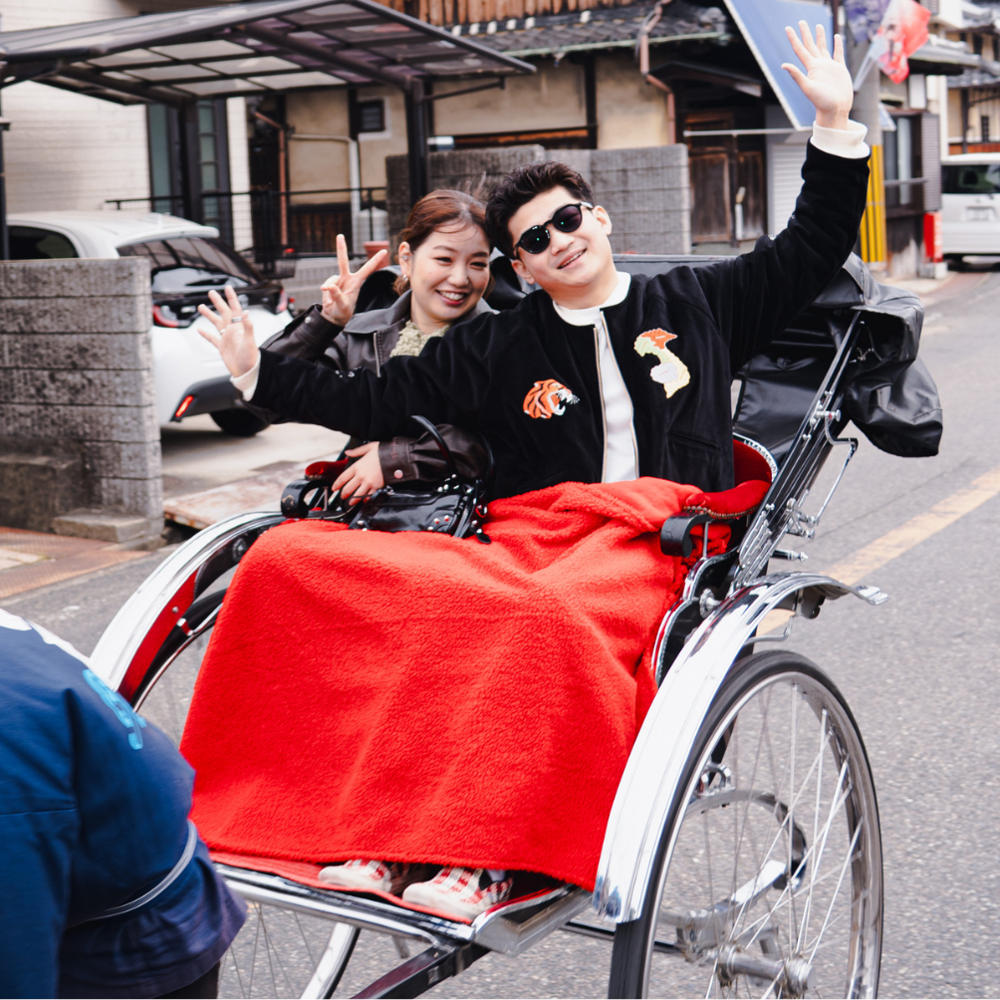
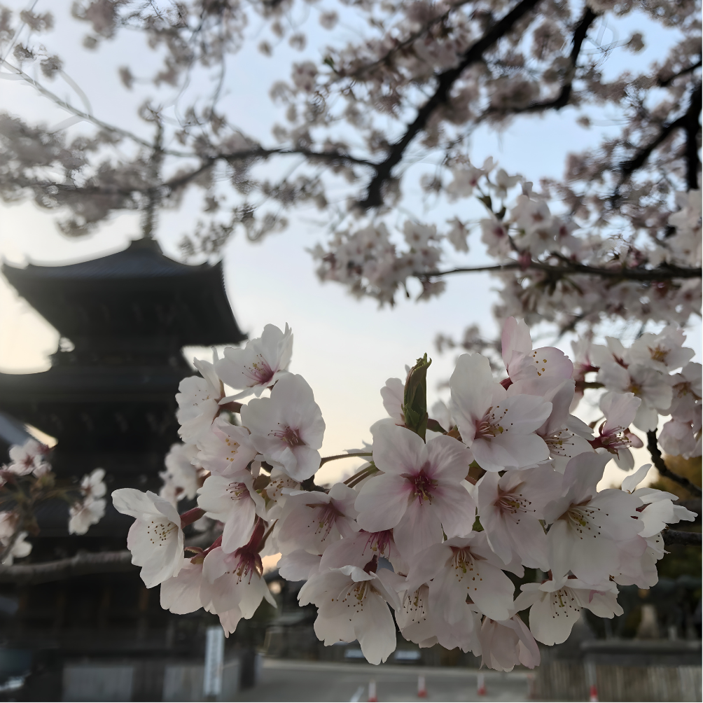
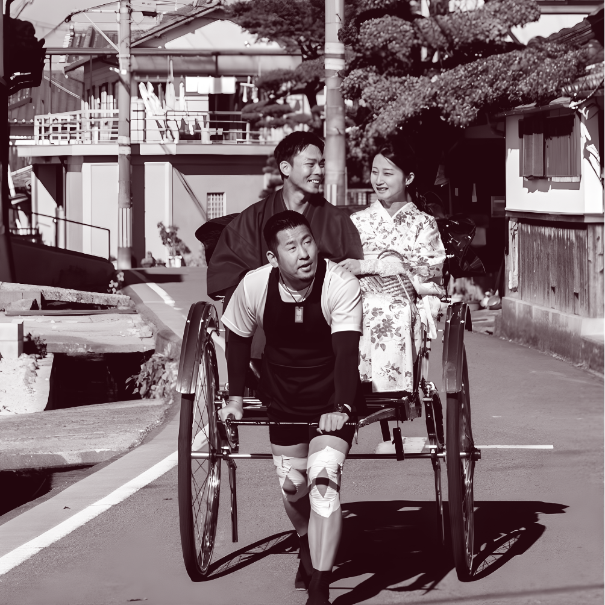

水間門前町とは？貝塚で
ゆっくり過ごせる穴場スポット
大阪・貝塚にある水間門前町は、にぎやかな観光地とは少し違う時間が流れる場所です。1300年以上続く水間寺に残る空気、自然の音が聞こえる水間街道、人力車で味わう町の奥行きを紹介します。
Articles
水間門前町や貝塚で、
ゆっくり過ごせる場所を探している人へ。

大阪・貝塚にある水間門前町は、にぎやかな観光地とは少し違う時間が流れる場所です。1300年以上続く水間寺に残る空気、自然の音が聞こえる水間街道、人力車で味わう町の奥行きを紹介します。

